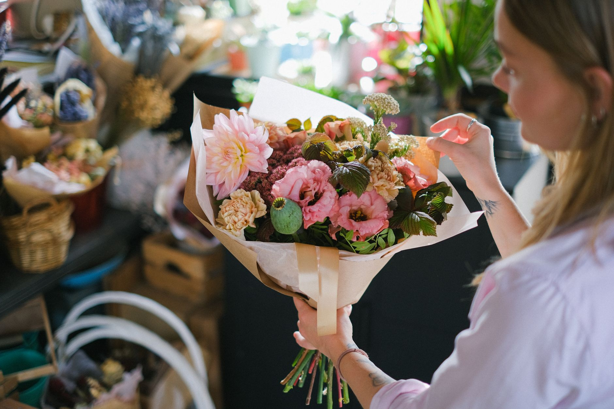
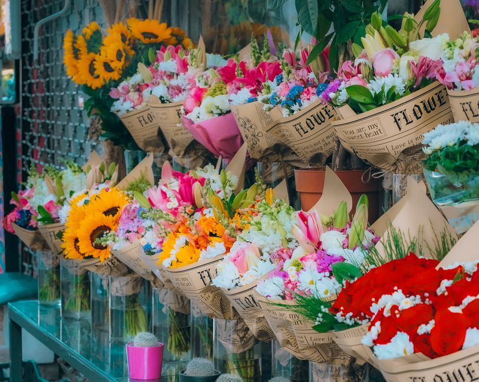
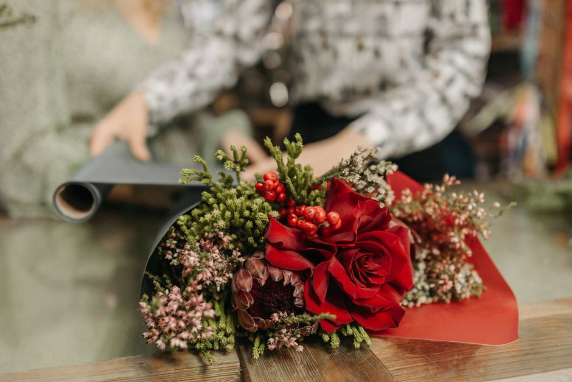
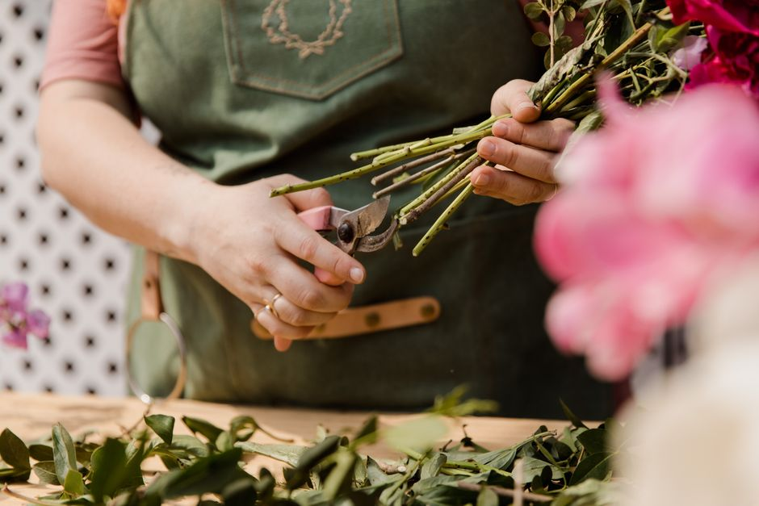
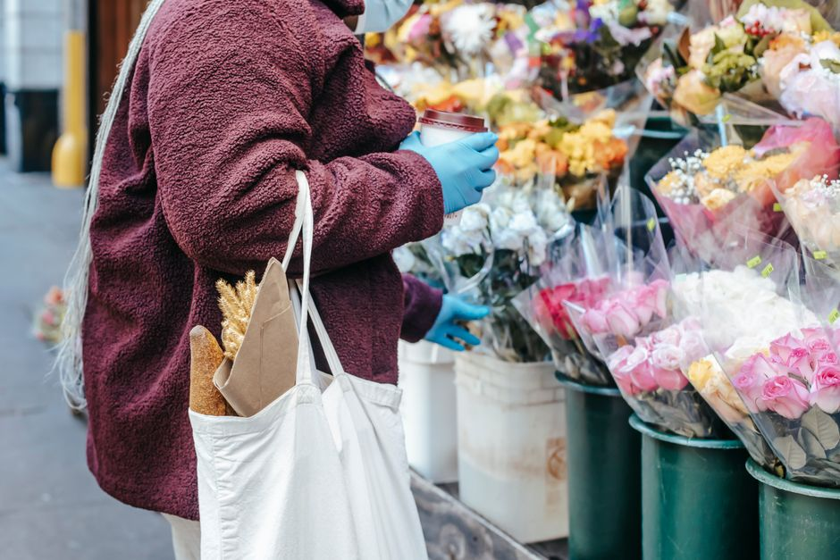
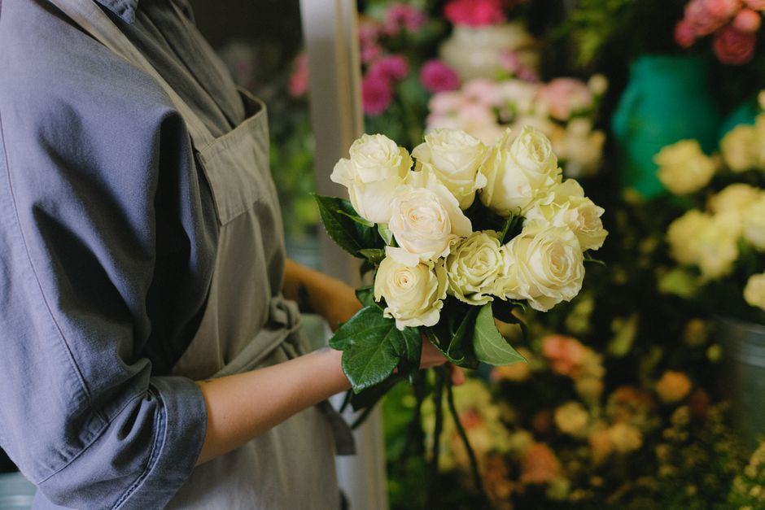
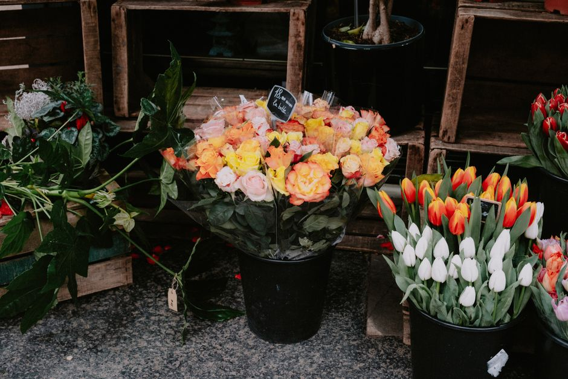

Geburtstagssträuße
Fröhliche, farbenfrohe Sträuße, die genau zum Geschmack des Geburtstagskindes passen.
Floristik aus Kiel

Fröhliche, farbenfrohe Sträuße, die genau zum Geschmack des Geburtstagskindes passen.
Romantische Arrangements mit Rosen und feinen Akzenten für den besonderen Moment zu zweit.
Frühlingszwiebeln, Sommerwiese oder Herbstlaub, wir binden, was gerade Saison hat.
Aufmunternde Sträuße in freundlichen Farben, die dem Kranken ein Lächeln bringen.
Zarte Sträuße in Rosa, Blau oder frischem Grün als herzlicher Willkommensgruß.
Würdevolle Kränze, Trauergestecke und Sargschmuck, einfühlsam und persönlich gestaltet.
Brautstrauß, Anstecker und Tischschmuck, farblich auf Ihren großen Tag abgestimmt.
Regelmäßiger Blumenschmuck für Empfang, Praxis oder Büro, auf Rechnung und zuverlässig.
Robuste Grün- und Blühpflanzen fürs Zuhause, inklusive ehrlicher Pflegeberatung.
Langlebige Trockensträuße und Bouquets, die über Monate schön bleiben.
Dekorative Gestecke für Tisch, Fensterbank oder Jubiläum, passend zur Jahreszeit.
Zustellung frischer Blumen innerhalb Kiels, werktags direkt nach Hause oder ins Büro.







Was mit einem kleinen Ladengeschäft begann, ist heute eine feste Adresse für alle, die Blumen mit Charakter suchen. Petra Beeck-Buhrke und ihr Team wählen jeden Morgen frische Ware aus und binden jeden Strauß individuell, nie von der Stange.
Wir nehmen uns Zeit, Ihren Anlass zu verstehen, bevor wir zur Schere greifen. So entsteht ein Arrangement, das genau das ausdrückt, was Sie sagen möchten, farblich abgestimmt und saisonal frisch.
Auf Deutsch · English · Español
Ja. Innerhalb von Kiel liefern wir werktags zuverlässig an die Wunschadresse, auf Wunsch mit persönlichem Grußkärtchen. Für Umlandgemeinden sprechen Sie uns einfach an, wir finden eine Lösung.
In der Regel ja. Viele Sträuße binden wir spontan im Laden. Für größere Anlässe wie Hochzeiten oder Trauerfloristik bitten wir um etwas Vorlauf, damit wir die passenden Blumen frisch bestellen können.
Unbedingt. Sagen Sie uns Ihre Lieblingsfarben, Budget und Anlass, den Rest übernehmen wir. Wenn Sie unsicher sind, beraten wir Sie gern direkt vor der Blumenauswahl.
Rufen Sie uns an oder schicken Sie uns eine Anfrage. Wir binden Ihren Strauss und liefern ihn auf Wunsch direkt zu Ihnen.